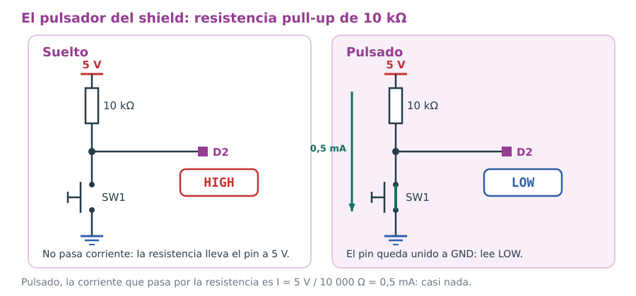
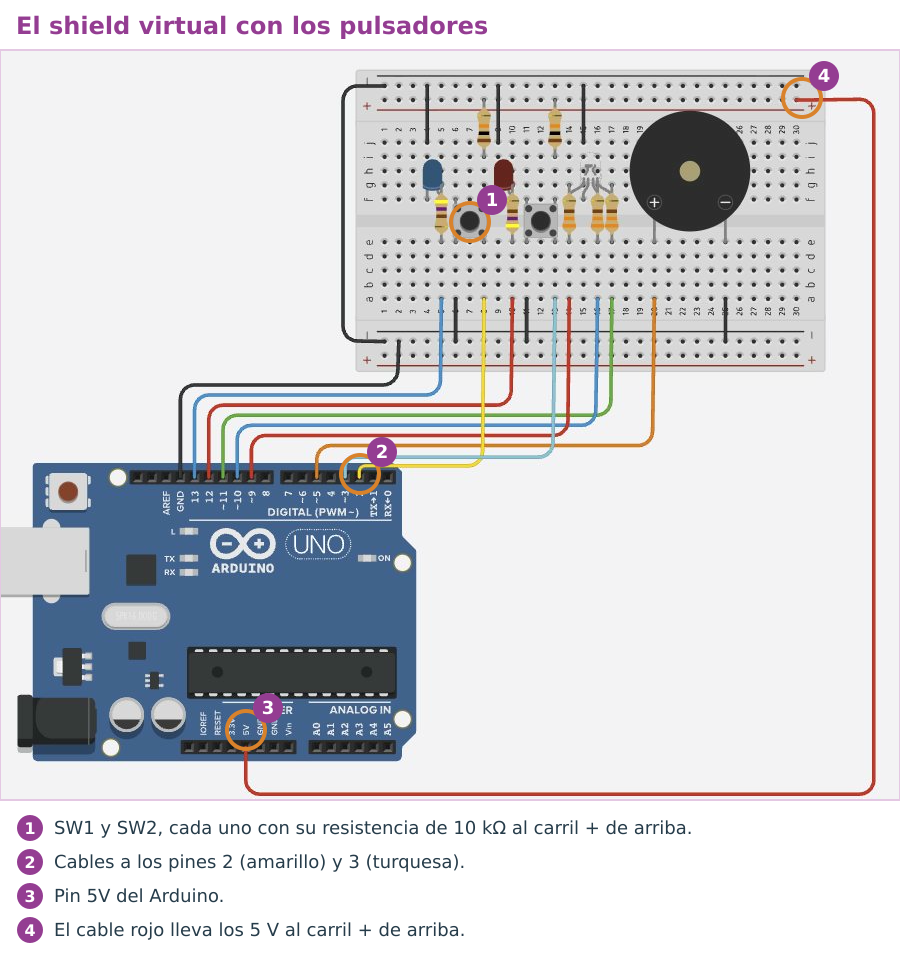
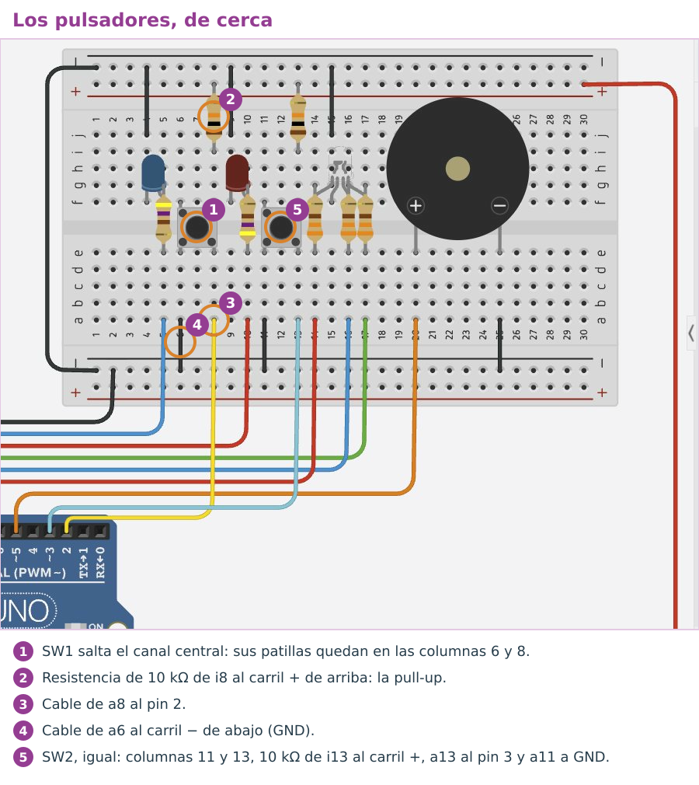
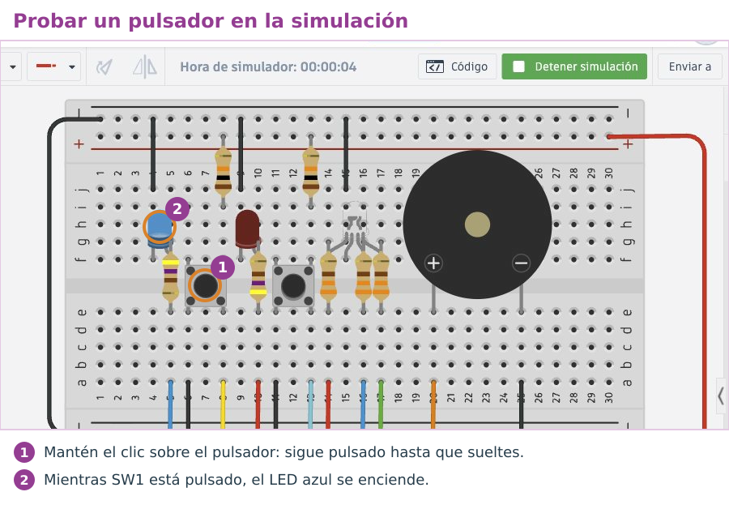

Qué vas a conseguir en esta página
Leer los pulsadores del shield, entender por qué llevan una resistencia pull-up, decidir con if y else qué hace el programa, y distinguir entre «está pulsado» y «lo acabo de pulsar».
Leer una entrada digital
Hasta ahora los pines daban órdenes. También pueden escuchar: si configuras un pin como entrada con pinMode(pin, INPUT), la función digitalRead(pin) te dice qué tensión le llega. Como es una entrada digital, solo hay dos respuestas:
| Tensión en el pin | digitalRead da |
|---|---|
| Por debajo de 1,5 V (lo ideal, 0 V) | LOW |
| Por encima de 3 V (lo ideal, 5 V) | HIGH |
| Entre 1,5 V y 3 V | No se sabe: puede dar cualquiera de los dos |
Por eso el circuito que hay fuera del pin tiene que dejar siempre una tensión clara, cerca de 0 V o cerca de 5 V.
Por qué un pulsador lleva una resistencia
Un pulsador solo une o separa dos contactos. Si lo pones entre el pin y GND, al pulsarlo el pin queda a 0 V. Pero al soltarlo, el pin no queda unido a nada: está al aire, y una entrada al aire lee lo que le parece, según las interferencias que le lleguen. Para evitarlo, el pin se une a 5 V con una resistencia de valor alto, la resistencia pull-up («tira hacia arriba»). Así están montados los dos pulsadores del shield:

Fíjate en la consecuencia, que es la que más errores provoca: en el shield, un pulsador suelto da HIGH y pulsado da LOW. Para no liarte, guarda el valor en una constante: const int PULSADO = LOW; y compara siempre con ella.
| Pulsador | Pin | Dónde está | Suelto | Pulsado |
|---|---|---|---|---|
| SW1 | 2 | Enfrente del LED azul | HIGH | LOW |
| SW2 | 3 | Enfrente del LED rojo | HIGH | LOW |
¿Y si un circuito no trae la resistencia?
El Arduino lleva dentro una resistencia pull-up en cada pin que puedes activar con pinMode(pin, INPUT_PULLUP). Con el shield no hace falta, porque ya trae la suya, pero te servirá cuando conectes un pulsador suelto.
Decidir: if y else
Frente a lo que has visto en Python, la idea es la misma; cambia la forma: la condición va entre paréntesis, cada bloque entre llaves y, en lugar de elif, se escribe else if.
if (condición) {
// si se cumple
} else if (otra condición) {
// si no se cumplía la primera, pero sí esta
} else {
// si no se cumple ninguna
}| Para… | En C++ | En Python |
|---|---|---|
| comparar si es igual / distinto | == · != | == · != |
| menor, mayor, menor o igual, mayor o igual | < > <= >= | igual |
| y / o / no | && · || · ! | and · or · not |
| verdadero / falso | true · false (tipo bool) | True · False |
Un solo igual guarda; dos comparan
if (estado = HIGH) no compara: guarda HIGH en estado y la condición sale siempre verdadera. El compilador no da error, así que el fallo es difícil de ver. Para comparar, ==.
Ejemplo: cada pulsador enciende el LED que tiene delante
// Mientras pulsas SW1 se enciende el LED azul, que tiene delante; con SW2, el rojo
const int SW1 = 2;
const int SW2 = 3;
const int LED_ROJO = 12;
const int LED_AZUL = 13;
const int PULSADO = LOW; // los pulsadores del shield dan LOW al pulsarlos
void setup() {
pinMode(SW1, INPUT); // la resistencia de pull-up ya está en el shield
pinMode(SW2, INPUT);
pinMode(LED_ROJO, OUTPUT);
pinMode(LED_AZUL, OUTPUT);
}
void loop() {
if (digitalRead(SW1) == PULSADO) {
digitalWrite(LED_AZUL, HIGH);
} else {
digitalWrite(LED_AZUL, LOW);
}
if (digitalRead(SW2) == PULSADO) {
digitalWrite(LED_ROJO, HIGH);
} else {
digitalWrite(LED_ROJO, LOW);
}
}Añade los pulsadores a tu Shield virtual
Abre tu Shield virtual (el original, no una copia) y añádele los dos pulsadores con su pull-up, como en el shield. Así, todas las copias que hagas a partir de ahora ya los tendrán.

- Coloca un Pulsador saltando el canal central, con sus patillas en las columnas 6 y 8 (filas e y f). Pasa el ratón por las patillas: las dos de la columna 6 son el terminal 1 y las de la columna 8, el terminal 2. Al pulsarlo, se unen las dos columnas. Coloca otro igual en las columnas 11 y 13.
- Pon una Resistencia de 10 kΩ en vertical de i8 al carril + de arriba, y otra de i13 al carril +. Son las pull-up.
- Une con cables: a8 con el pin 2, a13 con el pin 3, y a6 y a11 con el carril − de abajo.
- El carril + de arriba todavía no tiene tensión: lleva un cable desde el pin 5V del Arduino hasta él. Por el lado derecho de la placa de pruebas no se cruza con nada.

Para probarlo, pega en una copia el ejemplo de arriba e inicia la simulación.

«Está pulsado» no es lo mismo que «lo acabo de pulsar»
El ejemplo anterior pregunta si el pulsador está pulsado. Pero a veces quieres reaccionar una vez por cada pulsación: por ejemplo, que cada pulsación encienda o apague una luz. Si solo preguntas si está pulsado, loop() se repite miles de veces mientras tienes el dedo encima y la luz se enciende y se apaga sin control.
La solución es esperar a que sueltes el pulsador antes de seguir, con un while que no hace nada mientras siga pulsado. Hay un segundo problema: los contactos metálicos de un pulsador real rebotan durante unos milisegundos al pulsar y al soltar, y el Arduino es tan rápido que lo ve como varias pulsaciones. Se arregla esperando unos 20 ms (es el antirrebote). Tinkercad no simula los rebotes, pero la placa sí los tiene: no quites esa espera aunque en la simulación parezca innecesaria.
Práctica: un interruptor con un pulsador
No se entrega ni cuenta para la nota: sirve para practicar lo que necesitarás en las tareas y en el proyecto.
Este programa enciende o apaga el LED rojo cada vez que pulsas SW2. Piensa qué tiene que valer estado después de cada pulsación, cuándo tiene que seguir esperando el while y qué falta al soltar. Rellena los huecos y pruébalo primero en Tinkercad y después en la placa.
Abrir el programa con huecos
Es el programa de la práctica con algunas partes borradas. Cada ____ es una palabra, un número o un signo que ya has visto en esta página. Cópialo, sustituye cada hueco por lo que falta y pruébalo. Intenta primero hacerlo sin abrir esto: se aprende mucho más.
// Cada pulsación de SW2 enciende o apaga el LED rojo, que tiene delante
const int SW2 = 3;
const int LED_ROJO = 12;
const int PULSADO = LOW;
const int ANTIRREBOTE = 20; // milisegundos que se espera a que el contacto deje de rebotar
int estado = LOW; // cómo está el LED ahora
void setup() {
pinMode(SW2, INPUT);
pinMode(LED_ROJO, OUTPUT);
}
void loop() {
if (digitalRead(SW2) == PULSADO) {
estado = ____; // cambia: LOW pasa a HIGH y HIGH a LOW
digitalWrite(LED_ROJO, estado);
delay(ANTIRREBOTE);
while (digitalRead(SW2) == ____) {
// espera sin hacer nada hasta que sueltes el pulsador
}
____(ANTIRREBOTE);
}
}Ver el programa completo
// Cada pulsación de SW2 enciende o apaga el LED rojo, que tiene delante
const int SW2 = 3;
const int LED_ROJO = 12;
const int PULSADO = LOW;
const int ANTIRREBOTE = 20; // milisegundos que se espera a que el contacto deje de rebotar
int estado = LOW; // cómo está el LED ahora
void setup() {
pinMode(SW2, INPUT);
pinMode(LED_ROJO, OUTPUT);
}
void loop() {
if (digitalRead(SW2) == PULSADO) {
estado = !estado; // cambia: LOW pasa a HIGH y HIGH a LOW
digitalWrite(LED_ROJO, estado);
delay(ANTIRREBOTE);
while (digitalRead(SW2) == PULSADO) {
// espera sin hacer nada hasta que sueltes el pulsador
}
delay(ANTIRREBOTE);
}
}Prueba en la placa a quitar las dos esperas de ANTIRREBOTE: de vez en cuando, una pulsación encenderá y apagará el LED a la vez, y parecerá que no ha hecho nada.
Mantener pulsado para regular
Al revés que el interruptor, a veces lo que interesa es justo que algo siga pasando mientras mantienes el pulsador. En este ejemplo, SW1 sube el brillo del azul del LED RGB y SW2 lo baja, sin pasarse de 0 ni de 255:
Ejemplo: regular un brillo con dos pulsadores
// Mientras mantienes SW1 el azul del LED RGB sube; mientras mantienes SW2, baja
const int SW1 = 2;
const int SW2 = 3;
const int RGB_AZUL = 10;
const int PULSADO = LOW;
const int PAUSA_PASO = 8;
int brillo = 128; // empieza a medio brillo
void setup() {
pinMode(SW1, INPUT);
pinMode(SW2, INPUT);
pinMode(RGB_AZUL, OUTPUT);
analogWrite(RGB_AZUL, brillo);
}
void loop() {
if (digitalRead(SW1) == PULSADO && brillo < 255) {
brillo++;
} else if (digitalRead(SW2) == PULSADO && brillo > 0) {
brillo--;
}
analogWrite(RGB_AZUL, brillo);
delay(PAUSA_PASO);
}La condición digitalRead(SW1) == PULSADO && brillo < 255 solo se cumple si las dos partes son ciertas: el pulsador está pulsado y todavía no se ha llegado al máximo.
Otros sensores digitales
Un pulsador es el sensor digital más sencillo, pero hay muchos que funcionan igual: dan HIGH o LOW según detecten algo o no. Por ejemplo, un detector de presencia por infrarrojos (PIR), un final de carrera que avisa de que una puerta ha llegado al tope o un sensor de inclinación. Casi todos tienen tres patillas: GND, alimentación (VCC) y señal, en el mismo orden que los conectores libres del shield (D7, D8 y A3), así que se pueden enchufar en ellos y leer con digitalRead.
Si algo no funciona
| Lo que ves | Qué compruebas |
|---|---|
| El LED se enciende sin pulsar y se apaga al pulsar | Estás comparando con HIGH: en el shield, pulsado es LOW. |
| Un pulsador parece estar siempre pulsado | Mira la placa de lado: ¿toca alguna patilla del shield el conector USB metálico? |
| En Tinkercad el pulsador no hace nada | ¿Salta el canal central? ¿Llega el cable al pin y la resistencia al carril +? ¿Tiene 5 V el carril +? |
| Una pulsación cuenta dos veces o ninguna | Faltan la espera hasta soltar o las del antirrebote. |
| La condición siempre se cumple | ¿Has escrito = en lugar de ==? |
Tarea ED1 · Regulador de luz con alarma
Programa con los dos pulsadores y el LED RGB del shield este comportamiento:
- Mientras mantienes pulsado SW1, el azul del LED RGB sube poco a poco su brillo hasta 255, y ahí se queda aunque sigas pulsando.
- Mientras mantienes pulsado SW2, hace lo mismo el rojo.
- Al soltar, cada color se queda con el brillo al que haya llegado; así puedes mezclar el tono que quieras.
- Si pulsas los dos a la vez, los dos colores se apagan y suena una alarma en el zumbador durante 1,5 segundos.
Piensa en qué orden tienes que comprobar las condiciones: si preguntas primero solo por SW1, nunca llegarás a detectar que están pulsados los dos. Los brillos, en dos variables; los pines, el valor de PULSADO y la duración de la alarma, en constantes. En Tinkercad: copia del Shield virtual llamada Tarea ED1 - Regulador.
Está conseguida cuando… en la placa, cada pulsador sube su color sin pasar de 255, los colores mantienen su brillo al soltar, pulsando los dos a la vez se apagan y suena la alarma 1,5 s, y el programa compara con la constante PULSADO y usa && para detectar los dos pulsadores.
Entrega. Guarda el programa como tarea_ed1 (Archivo → Guardar como...) y graba con el móvil un vídeo corto de la placa haciéndolo todo, con el papel de tus iniciales y tu curso a la vista; llama al vídeo tarea_ed1. Súbelos a la tarea Colección de programas (Arduino) de Moodle con Editar entrega y Guardar cambios, igual que en la tarea SD1, sin pulsar todavía Enviar tarea.
Lo que tienes que saber de esta página
- pinMode(pin, INPUT) prepara un pin como entrada y digitalRead(pin) da HIGH (más de 3 V) o LOW (menos de 1,5 V).
- Una entrada al aire lee lo que le parece; la resistencia pull-up la lleva a 5 V mientras el pulsador está suelto.
- En el shield, SW1 (pin 2) y SW2 (pin 3) dan HIGH sueltos y LOW pulsados: compara con una constante PULSADO.
- if / else if / else decide; == compara y = guarda; && es «y», || es «o» y ! es «no».
- Para reaccionar una vez por pulsación: espera a que se suelte con un while y añade unos 20 ms de antirrebote.